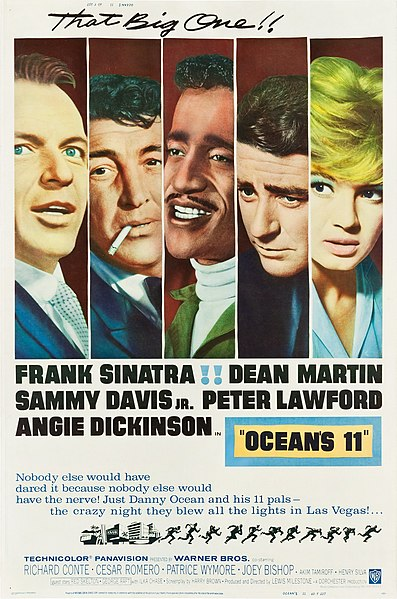
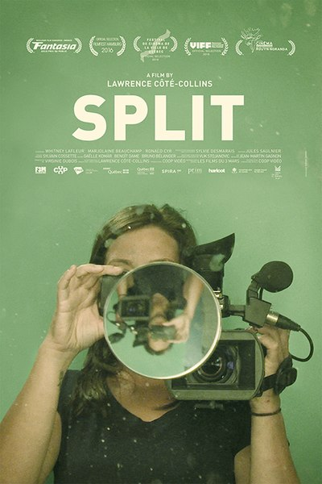
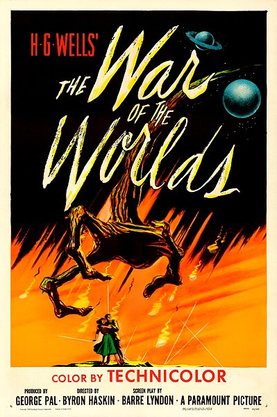

The social networking site for all things film
Watch. Review. Share.
Why you should join filmate
Filmate is an all-in-one social media site for fans of film. Whether you enjoy classic cinema, the Golden Age of Hollywood or the latest blockbuster hits, Filmate is the perfect place to discuss, rate and review the films you see. You can also create lists and maintain a watchlist for those films you've never quite got round to watching. It couldn't be easier to track the films you've seen with our intutive diary system. Want to share your reviews to your followers outside of Filmate? No problem! We make it easy to share your content off-site through social media integration. Join our community todayto share and like user's content and find your next favourite film!
Film review highlight
'Leave this in the 60s'
By tegantalks

"A classic that hasn't aged well at all. With a surprisingly dull ensemble (despite being a stellar cast otherwise)...."
★½
'Disappointing Debut'
By devfilm6

"An interesting take on the mockumentary genre; yet nothing is quite groundbreaking in Director's Côté-Collins debut film..."
★★
'Masterclass in True Cinema'
By blackcat
"Featuring perhaps one of the greatest performances in cinematic history through Falconetti's character..."
★★★★★
'The comfort of loneliness;
By roberto1987
"The main characters's experience of loneliness and isolation somehow comforts me..."
★★★
'Accurate and Entertaining'
By thelastfrenchcanadian
"Imbach wastes no time in setting the tone, yet he carefully crafts each scene..."
★★★½
'Captivating Terror'
By horrorjunkie

"A gripping survival tale, retold countless times, though no adaption manages to replicate..."
★★★★